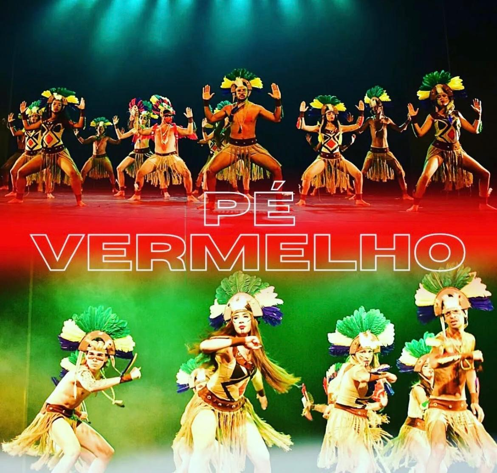

Boi Bumbá
O Boi Bumbá (ou Bumbá Meu Boi) surgiu no Brasil durante o período colonial, misturando influências indígenas, africanas e europeias. A lenda conta a história de Pai Francisco, um vaqueiro cuja a esposa, Catirina, grávida, deseja comer a língua do boi mais querido do fazendeiro. Para sastifazê-la, Francisco mata o animal, mas, ao ser descoberto, enfrenta a fúria do dono da fazenda. Com a ajuda de pajés e curandeiros, o boi é ressucitado, e a história termina com uma grande festa. Essa tradição é especialmente forte no Maranhão, Amazonas e Pará.